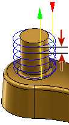

Distance jusqu'à laquelle avancer l'outil vers le bas pour chaque révolution de 360 degrés. Pour les parois droites, cette valeur est généralement supérieure à celle des parois de dépouille. La définition d'un pas plus fin sur une paroi de dépouille permet de créer une finition de surface plus lissée.
 |
Profondeur par révolution |